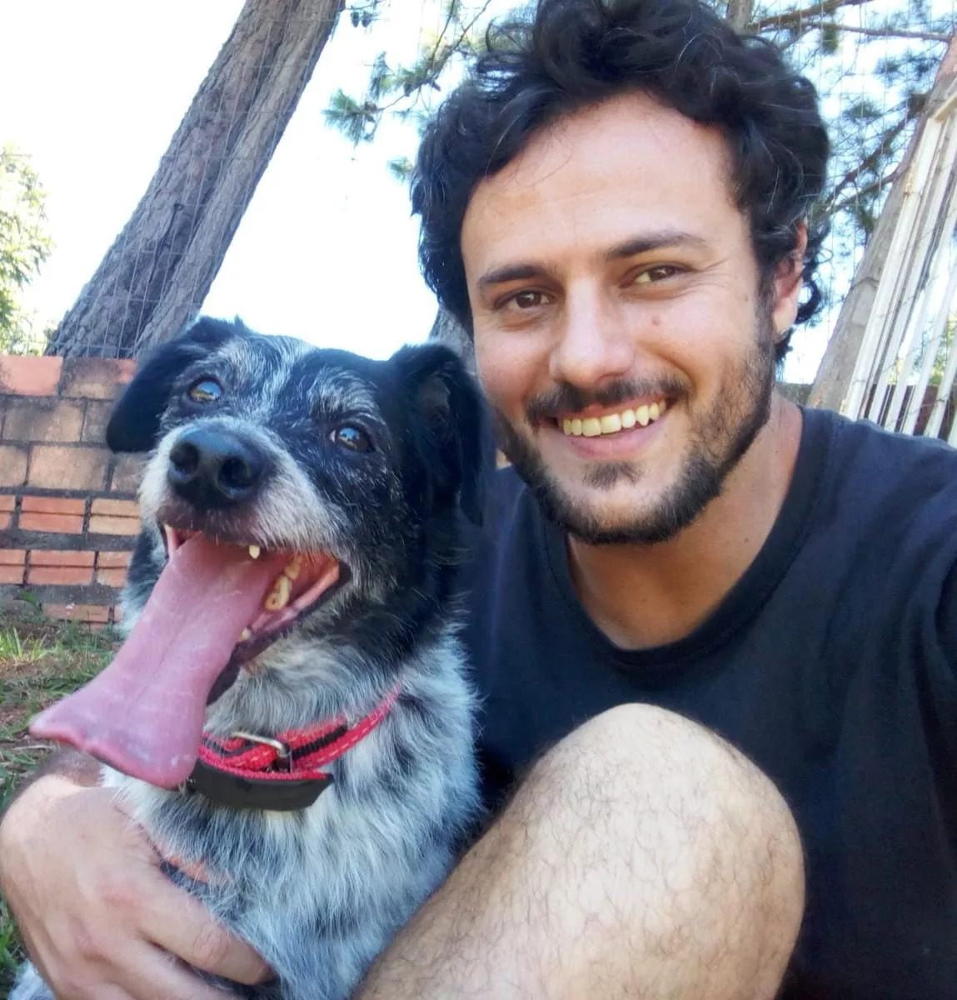

João Paulo Rossati

João Paulo Rossati
Função: Docente de Sociologia
Setor: Corpo Docente
Email: joao.rossati@ifpr.edu.br
Curriculo Lattes: Lattes
Atividades
Ministra Sociologia desenvolvendo reflexões críticas sobre sociedade, cultura e cidadania.